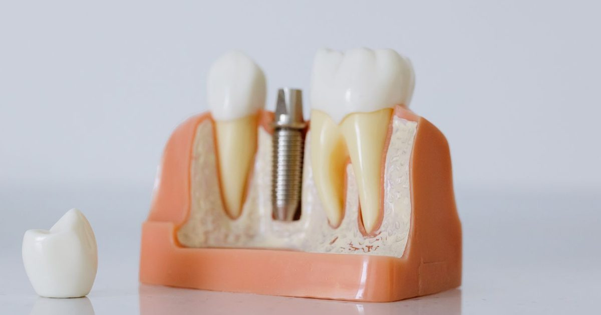

Information générale. Cet article s’appuie sur des recommandations publiées. Il ne constitue ni un diagnostic, ni une prescription, ni un conseil personnalisé : seul un examen par un chirurgien-dentiste ou un médecin permet de décider de la prise en charge qui vous convient. Ne commencez et n’arrêtez aucun traitement sur la seule foi de cet article.
L'essentiel
- À 5 ans, la survie des restaurations est comparable : 96,03 % pour les scellées et 95,55 % pour les vissées, sans différence significative.
- Les complications techniques et biologiques sont plus fréquentes avec les restaurations scellées.
- Les éclats de céramique sont plus fréquents avec les restaurations vissées, probablement à cause de l’accès à la vis.
- Les auteurs de la revue suggèrent de privilégier la rétention vissée. Le consensus issu de cette revue précise toutefois qu’aucune recommandation universelle ne peut être faite : les deux modes sont utilisés, le choix dépend de chaque situation et relève du praticien.
Deux façons de fixer une prothèse sur implant
Une prothèse scellée est fixée sur le pilier avec un ciment. Une prothèse vissée (ou « transvissée ») est fixée par une vis, accessible par un petit orifice que l’on referme ensuite.
La couronne est collée sur le pilier avec un ciment (en jaune).
La couronne est fixée par une vis, accessible par un petit orifice refermé ensuite.
Ce que dit la revue systématique
La revue de Wittneben et coll., publiée en 2014 (recherche bibliographique jusqu’en 2012), compare les restaurations fixes sur implants vissées et scellées.
| Critère | Scellée | Vissée |
|---|---|---|
| Survie à 5 ans | 96,03 % | 95,55 % (différence non significative) |
| Survie à 10 ans | 92,22 % | 91,30 % |
| Complications techniques (événements pour 100 ans de suivi) | 9,81 | 7,50 |
| Perte de rétention | Nettement plus fréquente | Moins fréquente |
| Éclat de la céramique | Moins fréquent | Plus fréquent |
| Fistule ou suppuration | Plus fréquente | Moins fréquente |
Le total pour les prothèses vissées ne comprend pas les fractures de la résine de recouvrement, fréquentes surtout sur les prothèses de toute une arcade. Le desserrage de la vis et la perte du bouchon de l’orifice ne concernent que les prothèses vissées. Pour les couronnes unitaires, l’estimation de survie à 5 ans est plus basse avec les prothèses vissées (91,2 % contre 96,4 %), mais la différence n’est pas statistiquement significative et l’incertitude est large.
Pour les autres critères biologiques (perte osseuse de plus de 2 mm, péri-implantite, mucosite), il n’y a pas de différence significative entre les deux modes de fixation.
Le ciment résiduel
La revue ne mesure pas le ciment en excès comme critère de résultat. Ses auteurs considèrent toutefois l’élimination incomplète du ciment comme un inconvénient majeur du scellement, associé aux maladies péri-implantaires. Le consensus mondial de 2017 cite le ciment sous la gencive parmi les facteurs de risque de péri-implantite, avec des preuves jugées limitées.
Que retenir pour le choix ?
Les auteurs recommandent de privilégier la rétention vissée, en raison des risques des restaurations scellées et des possibilités limitées d’intervenir après un scellement définitif. Le choix reste à la discrétion du praticien et doit être adapté à chaque patient : la rétention vissée exige un positionnement précis de l’implant, guidé par la prothèse, et une fabrication plus délicate. Ce choix ne permet pas de juger la qualité d’un traitement : un praticien qui choisit de sceller une prothèse peut avoir de bonnes raisons de le faire.
Les limites de l’étude
Les études incluses sont hétérogènes et il n’existe pas de définition standard de l’échec d’une prothèse, ce qui peut conduire à surestimer les échecs. Cette revue porte sur des études publiées jusqu’en 2012 : les matériaux et les techniques ont évolué depuis.
Avantages et limites de chaque mode
Moins d’éclats de la céramique. Mais perte de rétention plus fréquente, complications biologiques et fistules plus fréquentes, et élimination incomplète du ciment considérée comme un inconvénient majeur.
Complications techniques moins fréquentes au total (7,50 contre 9,81 événements pour 100 ans), possibilité d’intervenir après la pose. Mais éclats de céramique plus fréquents, desserrage de la vis et perte du bouchon de l’orifice, positionnement précis de l’implant exigé.
Si vous avez une prothèse sur implant
Quel que soit le mode de fixation, la prévention de la péri-implantite repose sur un accès suffisant pour l’hygiène et un suivi régulier (voir l’article « Péri-implantite : reconnaître, prévenir, traiter »). Si une prothèse vissée se desserre ou si l’orifice de la vis n’est plus refermé, ces événements, propres aux prothèses vissées, doivent être examinés par votre praticien.
Les mots à connaître
- Pilier implantaire
- Pièce qui relie l’implant à la prothèse.
- Prothèse scellée
- Prothèse fixée sur le pilier avec un ciment.
- Prothèse vissée (transvissée)
- Prothèse fixée par une vis, accessible par un petit orifice que l’on referme ensuite.
- Ciment résiduel
- Excès de ciment resté sous la gencive après le scellement. Les auteurs de la revue l’associent aux maladies péri-implantaires.
- Consensus de l’ITI
- Texte de la conférence de consensus de l’International Team for Implantology (2013), issu de la revue systématique.
Questions à poser à votre praticien
Ces questions peuvent vous aider à préparer un rendez-vous. Les réponses dépendent de votre situation.
- Mon traitement sera-t-il vissé ou scellé, et pourquoi dans mon cas ?
- Comment ferez-vous pour qu’aucun excès de ciment ne reste sous la gencive ?
- Si ma prothèse est vissée, comment sera refermé l’orifice de la vis ?
- Pourrez-vous intervenir facilement sur la prothèse si nécessaire ?
Questions fréquentes
Prothèse vissée ou scellée : laquelle choisir ?
La survie à 5 ans est comparable (96,03 % pour les scellées, 95,55 % pour les vissées). Les auteurs de la revue suggèrent de privilégier la rétention vissée, mais le consensus issu de cette revue précise qu’aucune recommandation universelle ne peut être faite : le choix relève du praticien, au cas par cas.
Le ciment peut-il poser problème ?
La revue ne mesure pas le ciment en excès comme critère de résultat, mais ses auteurs considèrent l’élimination incomplète du ciment comme un inconvénient majeur du scellement. Le consensus mondial de 2017 le cite parmi les facteurs de risque de péri-implantite, avec des preuves jugées limitées.
Un praticien qui scelle une prothèse travaille-t-il moins bien ?
Non : ce choix ne permet pas de juger la qualité d’un traitement. Un praticien qui choisit de sceller une prothèse peut avoir de bonnes raisons de le faire.
Quelles complications sont propres à la prothèse vissée ?
Le desserrage de la vis et la perte du bouchon de l’orifice ne concernent que les prothèses vissées. Les éclats de la céramique y sont aussi plus fréquents.
Et pour une couronne sur un seul implant ?
L’estimation de survie à 5 ans est plus basse avec les prothèses vissées (91,2 % contre 96,4 %), mais la différence n’est pas statistiquement significative et l’incertitude est large.
Ces données sont-elles récentes ?
La revue porte sur des études publiées jusqu’en 2012 : les matériaux et les techniques ont évolué depuis. Les études incluses sont hétérogènes et il n’existe pas de définition standard de l’échec d’une prothèse.
En résumé
La survie des prothèses scellées et vissées est comparable, mais les complications diffèrent. Les auteurs de la revue privilégient la prothèse vissée, mais le consensus qui en est issu précise qu’aucune recommandation universelle ne peut être faite : la décision revient au praticien, au cas par cas.
Références
- Wittneben JG, Millen C, Brägger U. Clinical performance of screw- versus cement-retained fixed implant-supported reconstructions: a systematic review. Int J Oral Maxillofac Implants. 2014;29(Suppl):84-98 (conférence de consensus de l’ITI, 2013). doi:10.11607/jomi.2014suppl.g2.1 https://doi.org/10.11607/jomi.2014suppl.g2.1
- Berglundh T, Armitage G, Araujo MG, et al. Peri-implant diseases and conditions: consensus report of workgroup 4 of the 2017 World Workshop on the Classification of Periodontal and Peri-Implant Diseases and Conditions. J Periodontol. 2018;89(Suppl 1):S313-S318. doi:10.1002/JPER.17-0739 https://doi.org/10.1002/JPER.17-0739
Pour une question sur votre situation personnelle, un examen est nécessaire : coordonnées et prise de rendez-vous sur la page Contact. N’envoyez pas d’informations de santé par le formulaire en ligne.